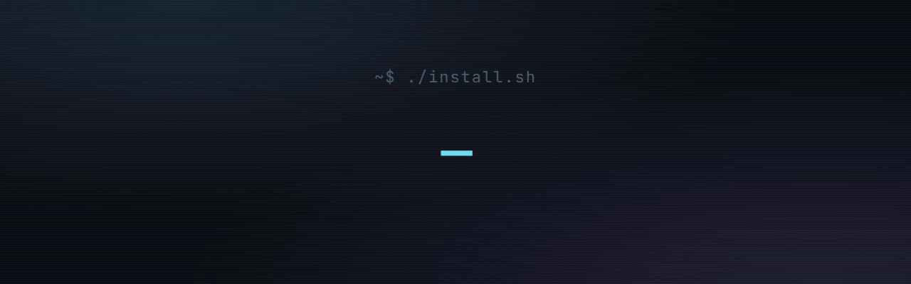
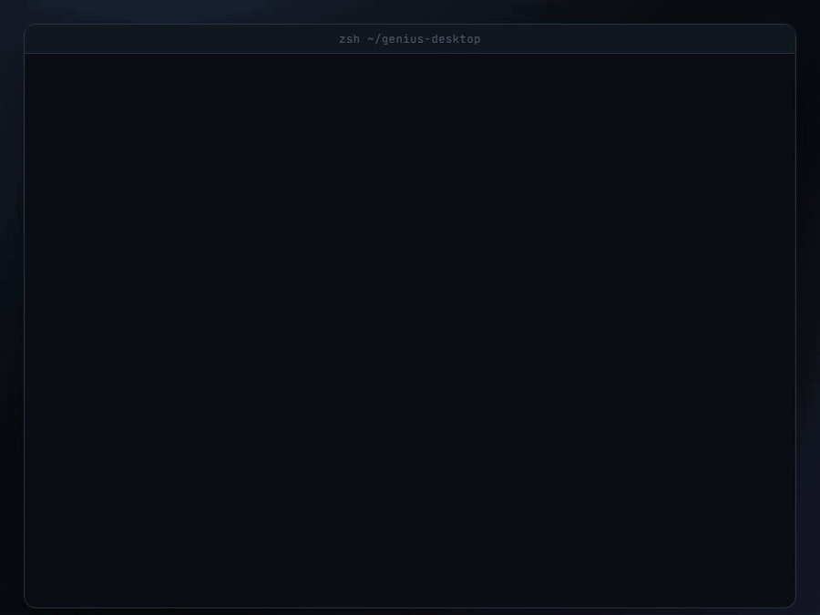
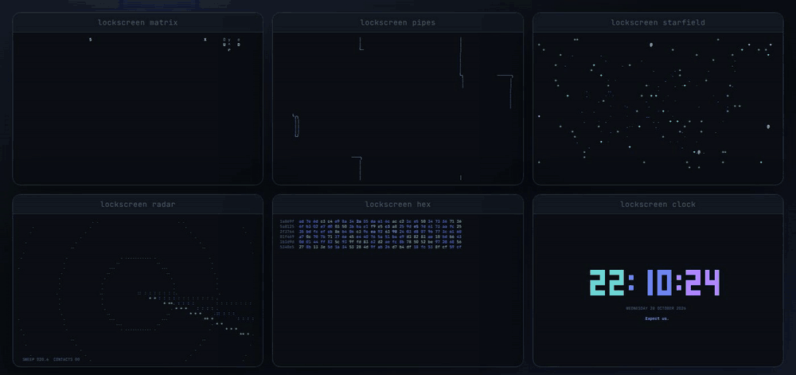
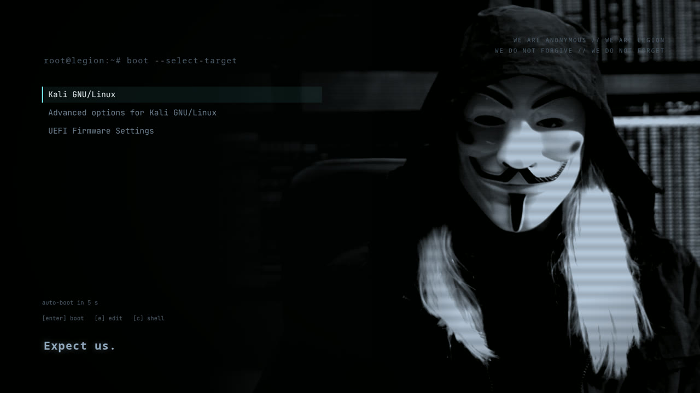
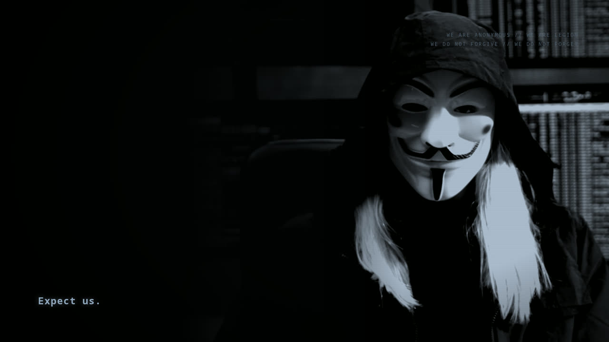
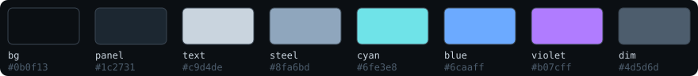

genius-desktop
--dry-run shows every change01 Install
Debian, Ubuntu or Kali. Run it as your normal user; it asks for sudo when it needs it.
git clone https://github.com/ZenithGenius/genius-desktop.git
cd genius-desktop
./install.sh --dry-run # preview every change, touch nothing
./install.sh # terminal + desktop
./install.sh --boot # optional: boot splash, GRUB, login screen- Packages your release does not have are skipped and listed; starship and yazi fall back to their official binaries.
- Configs are copied into your home folder. Any file that differs is kept as
NAME.bak-genius-DATE. - One line is added to
~/.zshrc. Open a new terminal and typecheat. - On GNOME, extensions switch on at your next login.
Terminal
Prompt, banner, modern CLI tools, themed tmux with workspaces and lock screens. Works on servers too.
Desktop
Dark GNOME with cyan icons, Desktop Cube, Coverflow, Burn My Windows, Conky HUD, quiet sounds.
Boot
Animated Plymouth splash, GRUB menu theme and login wallpaper, system-wide with --boot.
02 Terminal
Every tool shares the same palette, and every block in the shell file checks for its tool first, so a missing package never breaks your shell.

| Command | What it does |
|---|---|
| ls ll la lt | eza listings: git status, relative dates, tree view |
| cat file | bat with syntax highlighting; plain text in pipes |
| Ctrl+R Ctrl+T Alt+C | fzf history search, file picker, jump into a subfolder |
| z proj / zi | zoxide: jump to a folder you use often |
| y | yazi file manager; quit into the folder you browsed to |
| lazygit | git dashboard |
| glow file.md | Markdown in the terminal |
| btop | system monitor, matching theme |
| tldr cmd | short practical examples |
| asciinema rec | record a terminal session, idle gaps trimmed |
| cava / cava-idle | music visualizer; the idle version needs no audio |
| cheat | the full cheat sheet |
Commands that run 30 seconds or more send a desktop notification when they end. A ● vpn tag shows in the prompt while a VPN tunnel is up.
03 Workspaces and lock screens
mission builds a tmux workspace: a main shell, btop beside it, and a Markdown notes window. It remembers its folder, so it comes back after a reboot.
mission # pick: running missions first, then saved ones
mission recon ~/lab # create or resume "recon" in ~/lab
lockscreen radar # preview a lock screen: matrix pipes starfield radar hex clock
| Keys | Does |
|---|---|
| Ctrl+B then | | split side by side |
| Ctrl+B then - | split top and bottom |
| Ctrl+B then arrows | move between panes, or click |
| Ctrl+B then d | detach; everything keeps running |
04 Desktop
Installed only when GNOME is present. Extensions are fetched from extensions.gnome.org for your exact GNOME version.


Demo clips from the extensions' own repositories, by Simon Schneegans (Desktop Cube, Burn My Windows) and dsheeler (Coverflow Alt-Tab), GPL-3.0. They show the authors' default look; genius-desktop runs the same effects on the dark palette.
Dark, slate, cyan
Dark mode, Papirus icons with cyan folders, Bibata cursor, the system font kept as is.
Burn My Windows
Quick effects when a window opens (Hexagon, Glitch, TV), dramatic ones when it closes (Matrix, Fire, Broken glass).
Cube and Coverflow
Desktop Cube on Ctrl+Alt+arrows with a nebula sky box; a 3D carousel on Alt+Tab.
Conky HUD and Vitals
CPU, temperature, RAM and network on the desktop; load and memory in the top bar.
Anonymous sound theme
Short cold blips for alerts. No login sound.
05 Boot and login
./install.sh --boot backs up /etc/default/grub, installs the splash, sets the GRUB theme and, on GDM systems, the login wallpaper.


06 Customize
| Setting | Effect |
|---|---|
| GENIUS_BANNER="#hacker" | startup banner text (default #yourname) |
| GENIUS_QUIET=1 | no banner or fastfetch when a terminal opens |
| ~/.config/starship.toml | prompt |
| ~/.tmux.conf | tmux theme, keys, lock timer |
| ~/.config/burn-my-windows/ | window open and close effects |

07 Undo and troubleshooting
Remove the terminal layer
Delete the genius-desktop line at the end of ~/.zshrc, then restore any replaced file from its .bak-genius-DATE copy.
Remove the desktop layer
Switch icons, cursor and sounds back in Settings and turn the extensions off in the Extensions app.
Remove the boot layer
Delete /etc/default/grub.d/zz-genius.cfg, restore /etc/default/grub from its backup and run sudo update-grub, then sudo plymouth-set-default-theme -R bgrt. For the login screen, run sudo ./uninstall.sh from a clone of gse-gdm-extension.
The prompt did not change
Open a new terminal or run exec zsh. The login shell switch to zsh applies at the next login.
Extensions are installed but not running
GNOME loads new extensions at login. Log out and back in, then check with gnome-extensions list --enabled.
Installing over SSH
Supported. The installer borrows the logged-in session bus for GNOME settings, or starts a private one.